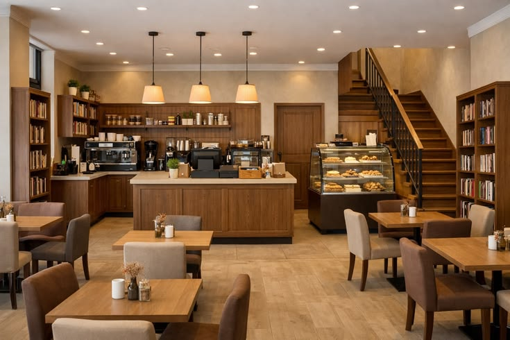

Galeri Kopi Nusa
Media Usaha


Nada Penanda Kedai
Nada uji singkat memastikan elemen audio dan kontrol browser dapat diperiksa.

Nada uji singkat memastikan elemen audio dan kontrol browser dapat diperiksa.